Snakes of Bahamas
15 snake species are recorded in the Bahamas in SnakeList: 0 venomous and 15 non-venomous, from 5 families.
- 15species
- 15non-venomous
- 5families
These totals count the snakes SnakeList records as living in the Bahamas. A species counts if it is recorded anywhere in the country, so not every snake lives in every region.
Species
Showing 15 species
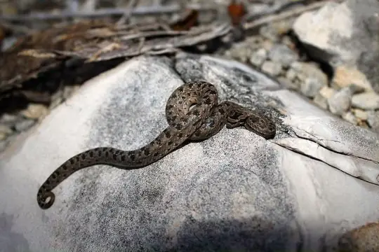
Bahama-Wood Snake (canus)Tropidophis canus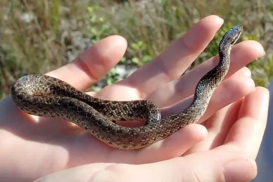
Bahama-Wood Snake (curtus)Tropidophis curtus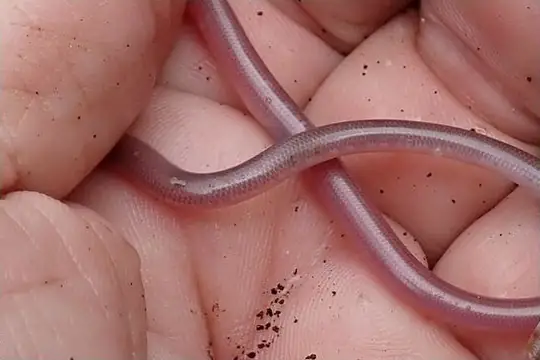
Bahaman Slender BlindsnakeCubatyphlops biminiensis- No photo yetConception Bank Silver BoaChilabothrus argentum
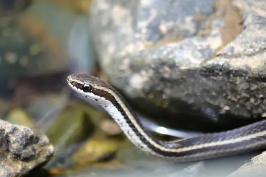
Cope's Antilles SnakeHypsirhynchus parvifrons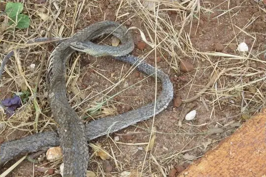
Cuban RacerCubophis cantherigerus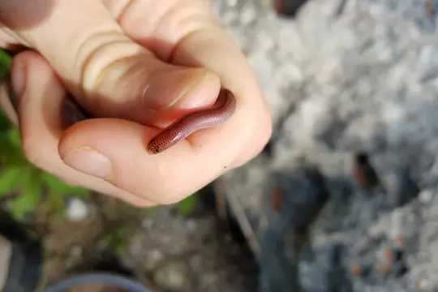
Earthworm Blind SnakeTyphlops lumbricalis- No photo yetFowl SnakeChilabothrus schwartzi
- No photo yetGreat Inagua Slender BlindsnakeCubatyphlops paradoxus
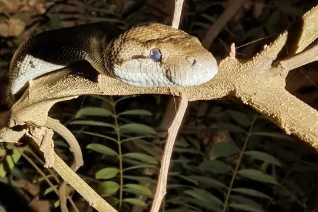
Haitian Boa (striatus)Chilabothrus striatus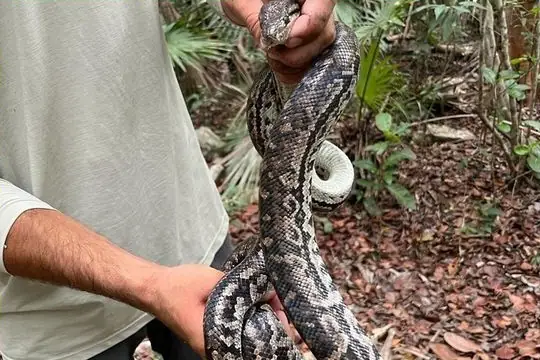
Haitian Boa (strigilatus)Chilabothrus strigilatus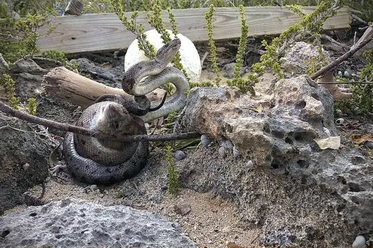
Northern Bahamas BoaChilabothrus exsul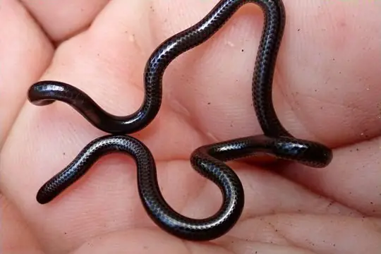
San Salvador Blind SnakeEpictia columbi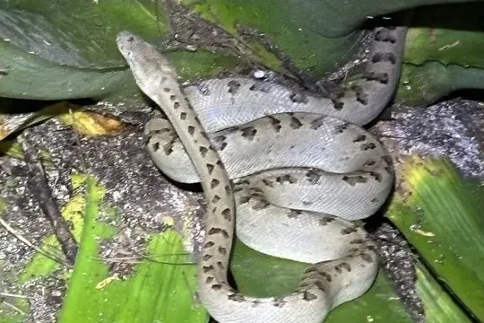
Southern Bahamas BoaChilabothrus chrysogaster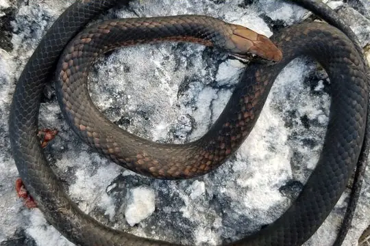
Vud's Bahamian RacerCubophis vudii
No snakes in Bahamas match.
Bahamas’s snakes in numbers
- Families: Boidae 6, Colubridae 3, Typhlopidae 3, Tropidophiidae 2, Leptotyphlopidae 1.
- 9 are recorded in no other country in SnakeList: Bahama-Wood Snake (canus), Bahama-Wood Snake (curtus), Conception Bank Silver Boa, Fowl Snake, Great Inagua Slender Blindsnake, Haitian Boa (strigilatus), Northern Bahamas Boa, San Salvador Blind Snake, Vud's Bahamian Racer.
States and provinces
The states and provinces where SnakeList records snakes, with how many species each has. Each page has its families, venomous snakes, the species found only there, its cities and neighbours.
- Berry Islands 1 species
- Bimini 3 species
- Black Point 1 species
- Cat Island 2 species
- Central Abaco 2 species
- Central Andros 1 species
- Central Eleuthera 2 species
- Exuma 2 species
- Inagua 1 species
- Long Island 1 species
- New Providence 4 species
- North Andros 5 species
- North Eleuthera 1 species
- San Salvador Island 1 species
- South Abaco 2 species
- South Eleuthera 2 species
No place matches that.
Cities
Its biggest cities, biggest first. Snakes are recorded by state or province, not by city, so each city page shows the snakes of the state or province it is in.
- Nassau New Providence
No place matches that.